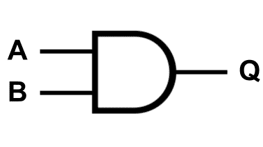
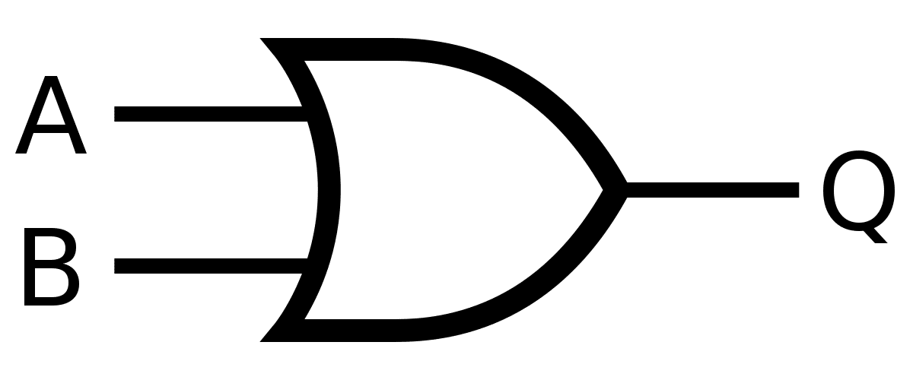
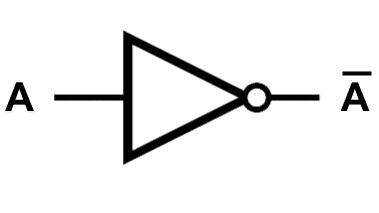
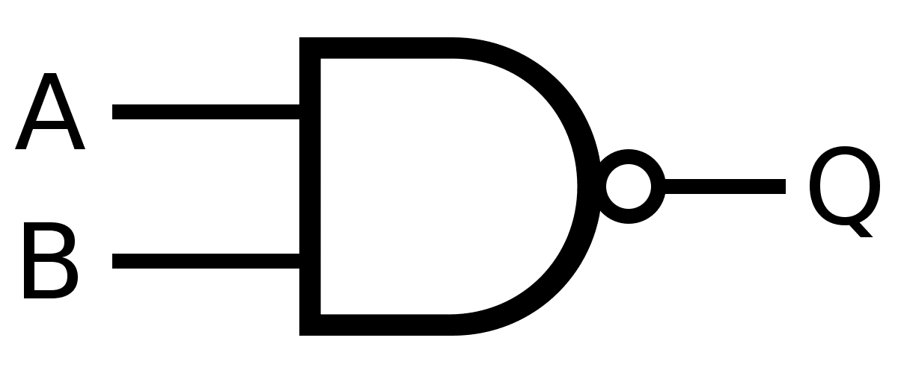
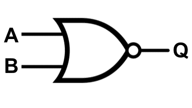
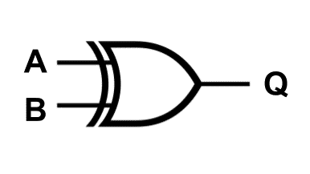
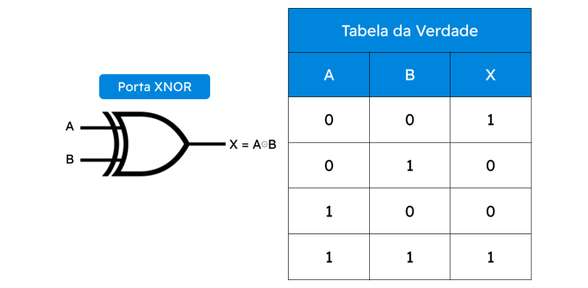
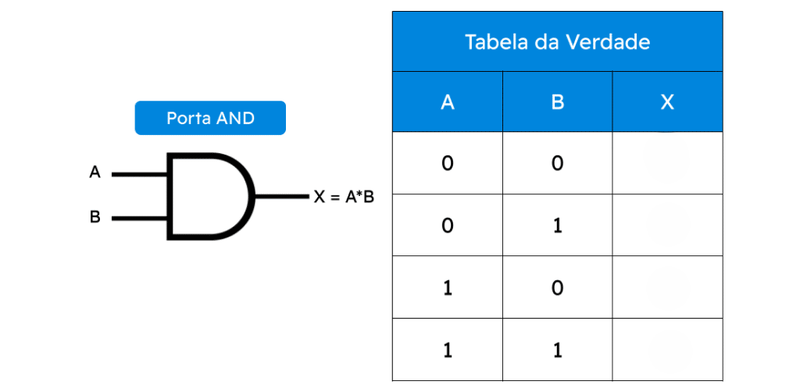
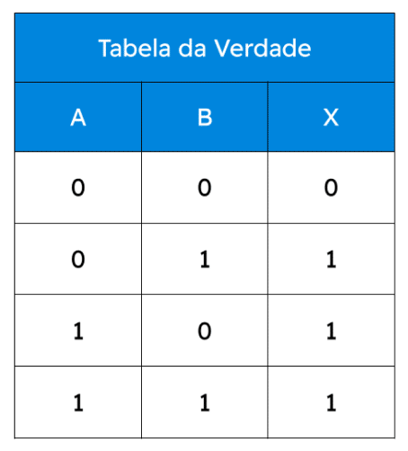

Introdução
Os circuitos digitais estão presentes em praticamente todos os dispositivos eletrônicos modernos, como computadores, celulares, consoles de videogame e sistemas de automação.
Eles funcionam a partir de valores binários, representados por 0 e 1, que indicam estados como desligado/ligado ou falso/verdadeiro.
Neste material, você vai aprender:
- que são portas lógicas
- Como elas funcionam
- Como montar e interpretar tabelas verdade
- Como aplicar esse conhecimento em situações reais
Ao final, você poderá testar seu aprendizado em um quiz interativo.
O que são Portas Lógicas
Portas lógicas são componentes fundamentais dos circuitos digitais.
Elas recebem um ou mais valores de entrada (0 ou 1), realizam uma operação lógica e produzem uma saída, também em 0 ou 1.
Cada porta segue uma regra lógica específica , que define qual será o valor da saída para cada combinação possível de entradas.
Em termos simples:
- Portas lógicas tomam decisões baseadas em regras.
Tipos de Portas Lógicas
Porta AND (E)

A porta AND retorna saída 1 somente quando todas as entradas forem 1.
- Se uma das entradas for 0 → saída será 0
- Funciona como a ideia de “tudo precisa estar ligado”
Exemplo conceitual:
Dois botões precisam estar pressionados para uma máquina funcionar.
Porta OR (OU)

A porta OR retorna saída 1 quando pelo menos uma entrada for 1.
- Só retorna 0 se todas as entradas forem 0
- Funciona como uma alternativa
Exemplo conceitual:
Uma lâmpada acende se qualquer um dos dois interruptores for ligado.
Porta NOT (NÃO)

A porta NOT possui apenas uma entrada e inverte o valor.
- Entrada 0 → saída 1
- Entrada 1 → saída 0
Exemplo conceitual:
Um sistema que desliga automaticamente quando detecta algo ligado.
Portas Derivadas
NAND

É a negação da AND .
- Só retorna 0 quando todas as entradas forem 1
NOR

É a negação da OR .
- Só retorna 1 quando todas as entradas forem 0
XOR (OU exclusivo)

- Retorna 1 quando as entradas são diferentes
- Retorna 0 quando são iguais
Essas portas são muito usadas em circuitos mais complexos.
Tabela Verdade

A tabela verdade é uma forma organizada de mostrar todas as combinações possíveis de entradas e o resultado correspondente da saída.
Ela serve para:
- Analisar o comportamento de uma porta lógica
- Conferir se um circuito está correto
- Resolver exercícios e provas
Como montar uma tabela verdade:
- Defina o número de entradas
- Liste todas as combinações possíveis de 0 e 1
- Aplique a regra da porta lógica para cada linha
Exemplos Práticos
O alarme dispara apenas se o sensor detectar movimento E a porta estiver fechada.
A porta abre se a senha OU o cartão estiver correto.
A luz acende apenas se for noite E houver presença.
Esses exemplos mostram como a lógica digital está presente no dia a dia.
Resumo Visual
Nesta seção, o objetivo é revisar rapidamente os conceitos:
- Portas lógicas trabalham com 0 e 1
- Cada porta tem uma regra própria
- A tabela verdade mostra todos os resultados possíveis
- AND → todas as entradas precisam ser 1
- OR → pelo menos uma entrada precisa ser 1
- NOT → inverte o valor
Quiz Final
Qual será a saída para determinadas entradas?

Qual porta lógica representa o comportamento descrito?

As portas lógicas tomam decisões baseadas em que?